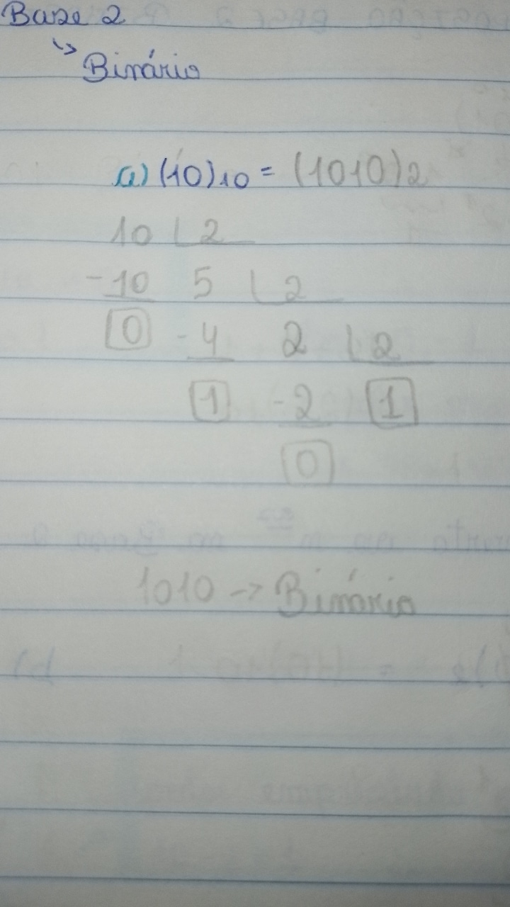
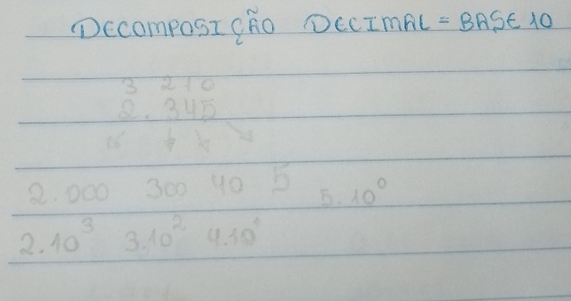
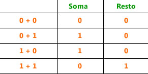
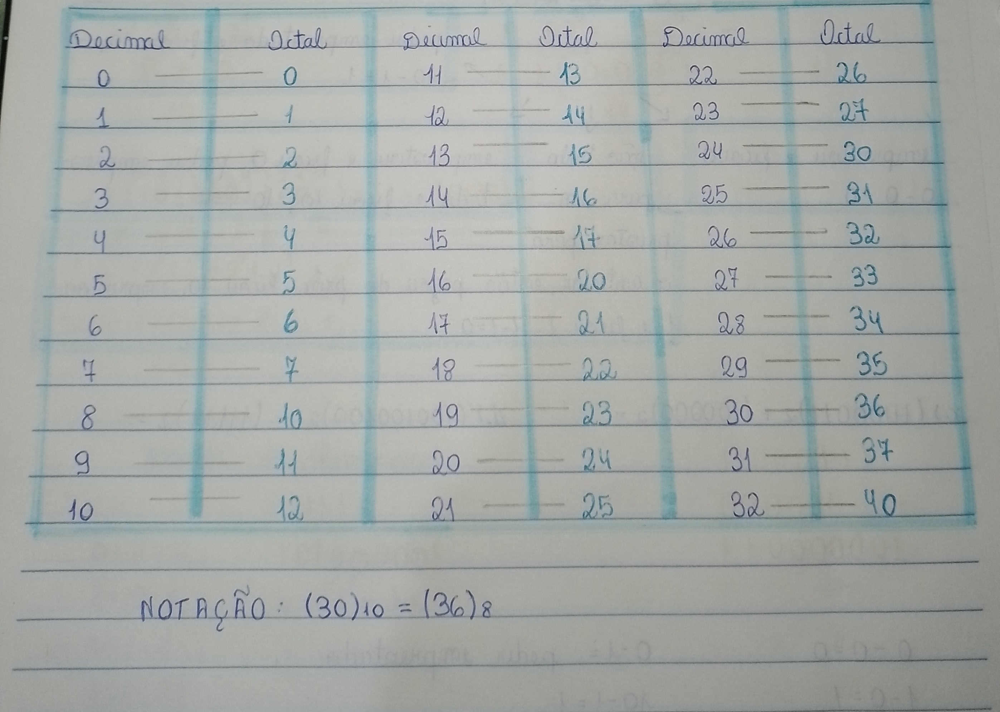
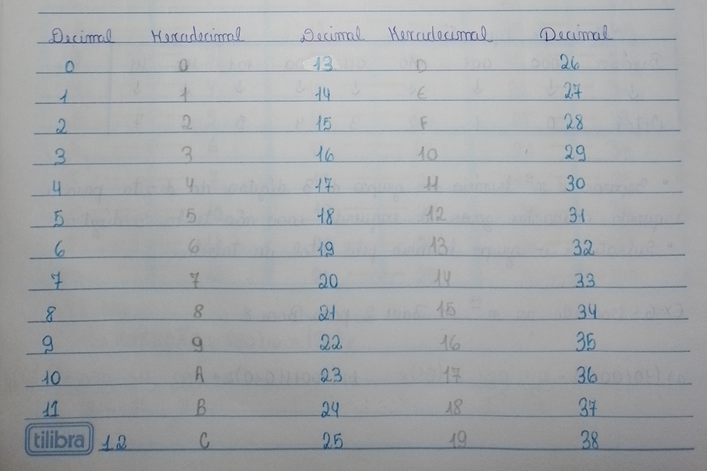
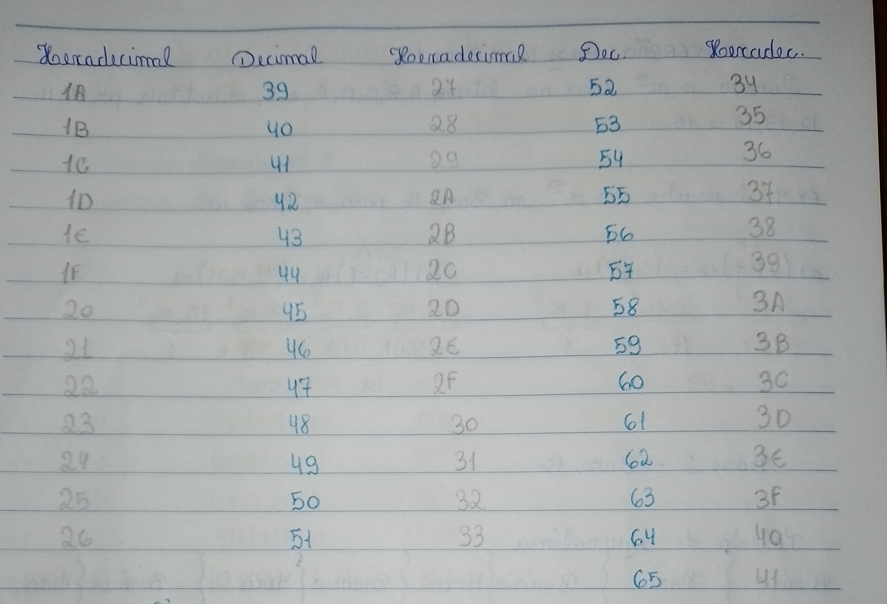
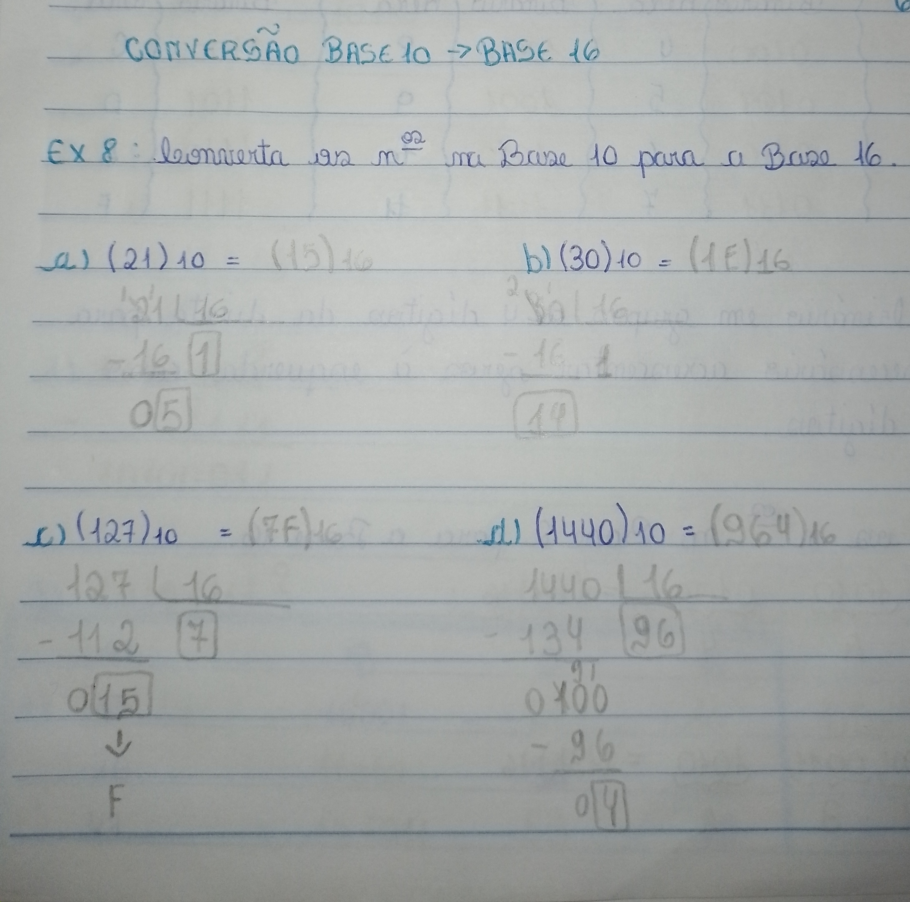

Sistema de Numeração
O que é Sistema de Numeração?
Sistemas de numeração são fundamentais para a informática, representando números em diferentes bases e posições.
Sistema Decimal
O sistema decimal possui 10 símbolos: 0, 1, 2, 3, 4, 5, 6, 7, 8, 9.
IMPORTANTE:
Não começamos a contar a partir do 1, mas sim do 0. O último dígito é 9, não 10.
Sistema Binário
O sistema binário possui apenas 2 símbolos: 0 e 1.

Conversões Decimal para Binário
Divida o número entre parênteses por dois e repita até obter um resto igual a 1.
Veja um exemplo abaixo:

IMPORTANTE: Após esse processo, una o que resta das divisões ao quociente da divisão.
Conversões dos Decimais
Divida os números por unidade e multiplique por dez, atribuindo uma potência a cada multiplicação.
Exemplo:

IMPORTANTE:
Não comece a contar a partir do número 1, mas sim do número 0. O último dígito será 9, não 10. A regra também se aplica à decomposição da base 10, onde as potências começam a partir do 0.
Conversões Base 2 para Base 10
Realize o mesmo processo da decomposição dos decimais, multiplicando por 2. No final, some os resultados das potências para obter um número decimal.
Exemplo:

Adição de Binários
Siga a tabela de adição.

Exemplo:

Subtração de Binários
Para subtrair em binário, siga a tabela correspondente.

Aqui está um exemplo de exercício com explicações:

Sistema Octal
O sistema octal representa números até o dígito 7, começando com 0.
Os números octais são: 0, 1, 2, 3, 4, 5, 6, 7.
Para facilitar a notação, o sistema octal utiliza uma tabela com os decimais correspondentes em octal.
Veja um exemplo da tabela:

Conversões decimais para octais
Para converter, divida o número entre parênteses por 8 até obter o quociente 1. Transforme o resultado em um número octal.
Veja o exemplo a seguir:

Conversão octal para decimal
Numere os dígitos a partir de zero e multiplique-os por 8 elevado à potência correspondente. Some todos os resultados para obter um número decimal.
Aqui está um exemplo de exercício:

Conversão de Binário para Octal
Primeiro é importante ter a tabela de equivalência que facilita muito no entendimento.

Breve explicação: Separa-se o número binário dado em três dígitos da direita para a esquerda. Caso o número
não tenha 3 dígitos, acrescenta-se zeros à esquerda do número para que dê certo na separação e na notação
desse número. Por fim, substitui-se o número binário pelo octal correspondente da tabela.
Veja abaixo exemplos:

Conversão de Octal para Binário
Separa-se o número dado por unidade, ou seja, um por um. Com a mesma tabela que utilizamos para realizar a
conversão de Binário para Octal, iremos substituir esses números que foram separados um por um pelo número
equivalente da tabela.
Analise um exemplo a seguir:

Sistema Hexadecimal
Os números nesse sistema são representados por 16 símbolos, dez algarismos e mais seis letras do
alfabeto.
Tendo assim: 0, 1, 2, 3, 4, 5, 6, 7, 8, 9, A, B, C, D, E, F.
Veja a tabela a seguir que ajudará no conhecimento.


Conversão Decimal para Hexadecimal
Para converter, basta dividir o decimal por 16 até que se obtenha o quociente (1). Com o resultado,
olhamos na tabela e o substituímos pelo correspondente.
Analise alguns exemplos a seguir:

Conversão Hexadecimal para Decimal
Na conversão de hexa para decimal, numera-se os números dados começando a partir de zero. Depois,
multiplicamos cada dígito por 16 elevado à potência correspondente para obter um número decimal.
IMPORTANTE: Quando tivermos uma das letras A, B, C, D, E ou F, substituímos pela correspondente da tabela
de decimais e hexadecimais acima.
Analise alguns exemplos a seguir:

Conversão de Binários para Hexadecimal
Para entender melhor, siga a tabela de equivalência abaixo:
Tabela de Conversão de Binário para Hexadecimal
| Binário |
Hexadecimal |
| 0000 |
0 |
| 0001 |
1 |
| 0010 |
2 |
| 0011 |
3 |
| 0100 |
4 |
| 0101 |
5 |
0110 |
6 |
| 0111 |
7 |
| 1000 |
8 |
| 1001 |
9 |
| 1010 |
A |
| 1011 |
B |
| 1100 |
C |
1101 |
D |
| 1110 |
E |
| 1111 |
F |
Separa-se o n° binário em grupos de 4 dígitos da direita para esquerda.Se necessário acrescentar zeros á esquerda caso não se tenha os 4 dígitos.
Depois substituimos o número binário pelo correspondente da tabela, para virar os quatro dígitos.